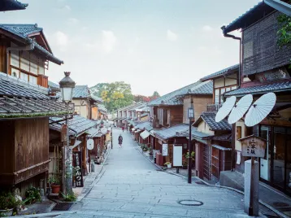

About
- Kazuki Asahina
- ・25歳 長野県佐久市出身
- ・ソフトウェア業界でマーケティングに従事
- ・趣味はカメラ、愛機はCanon
- ・自然を撮影するのが好きで、海や山によく行く
Works
-
新潟に訪れた際に、日本海の雄大さに魅了されて撮影した1枚
-
地元長野の木曽町から撮影した、冠雪した御嶽山
-

京都で撮影した、明け方の古き良き日本の町並み
新潟に訪れた際に、日本海の雄大さに魅了されて撮影した1枚
地元長野の木曽町から撮影した、冠雪した御嶽山
京都で撮影した、明け方の古き良き日本の町並み